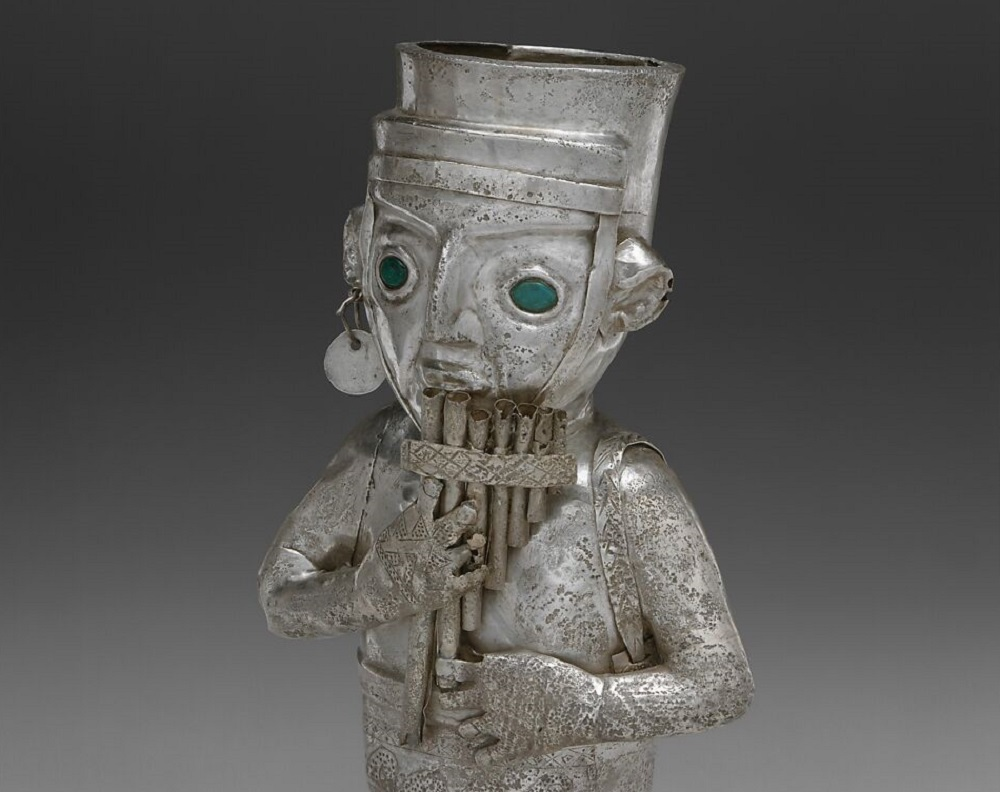

Textiles chimú
Apunte 025
Inicio > Blog Bitácora de un músico > Apunte 025
Vestimenta al borde del sonido
Una vasija de plata chimú procedente de la costa norte del Perú y fechada aproximadamente entre 1350 y 1470 representa a un hombre tocando una flauta de Pan. El instrumento se reconoce con facilidad: una hilera graduada de tubos que el músico sostiene con ambas manos junto a la boca. Sin embargo, la vestimenta de la figura ha sido representada con igual cuidado. Lleva una túnica y un taparrabos decorados con motivos geométricos, un gorro, adornos en las orejas y una pequeña bolsa suspendida de un hombro. Los diseños trazados sobre las prendas corresponden a patrones presentes en textiles chimú conservados hasta hoy.
La vasija no nos dice qué música interpretaba, dónde lo hacía ni qué posición ocupaba. Sí muestra que el músico no fue concebido como un cuerpo indiferenciado que sostiene un instrumento. Vestimenta, ornamento, postura y acción musical forman una sola representación. La flauta de Pan identifica una actividad; la ropa contribuye a definir la identidad social de quien la realiza.
El sonido surge de un cuerpo que ya ha sido hecho visible y socialmente reconocible.
Textiles y posición social
Los textiles poseían una considerable importancia política, económica y ceremonial en la sociedad chimú. El algodón y la fibra de camélido se trabajaban mediante tejido de tapicería, brocado, bordado, calado, aplicaciones y labores con plumas. Algunas prendas incorporaban ornamentos de oro o plata cosidos directamente a la tela. Las diferencias de material, el trabajo invertido, el diseño y la complejidad técnica contribuían a distinguir posiciones sociales y funciones ceremoniales.
La vestimenta no debe entenderse, por lo tanto, como una envoltura neutral alrededor del acto (supuestamente más importante) de tocar. Un músico vestido con una túnica de diseño elaborado, un tocado complejo o una prenda cubierta de placas metálicas ingresaba en el espacio público portando varias formas de información al mismo tiempo. El instrumento indicaba qué hacía. La vestimenta contribuía a establecer quién podía ser dentro de la ceremonia y cómo debía ser percibido su cuerpo.
Esto no significa que toda imagen de un músico ricamente vestido represente necesariamente a un gobernante o a un sacerdote. La iconografía chimú no ofrece correspondencias tan sencillas. Significa que la vestimenta participaba en la construcción del intérprete como figura social. El cuerpo que producía sonido era también un cuerpo vestido, y separar ambas dimensiones implica perder una parte de la escena.
Plata en movimiento
Entre las evidencias más notables de las prendas chimú cubiertas con placas de plata se encuentran elementos metálicos colgantes. Las placas eran perforadas y cosidas sobre un soporte textil, creando una superficie que cambiaba con el movimiento de quien la llevaba. Las descripciones museísticas destacan su capacidad para captar y reflejar la luz durante danzas, ceremonias y procesiones.
El efecto habría dependido de varias condiciones: el número y la disposición de las placas, el movimiento del portador, el ángulo de la luz solar o del fuego y la distancia desde la cual se observaba el cuerpo. La plata convertía la vestimenta en un campo de luminosidad móvil. Una persona que caminaba, giraba o bailaba con una prenda semejante no se limitaba a llevar adornos. Cada movimiento volvía a activar la superficie.
No es posible determinar con certeza si el metal producía un sonido perceptible. Las placas pudieron rozar la tela o tocarse entre sí, pero los restos conservados no permiten reconstruir el volumen ni la importancia de ese contacto. Tampoco es necesario afirmar que las prendas funcionaban como instrumentos. Su efecto visual documentado ya resulta significativo.
En un contexto ceremonial, la música y la luz reflejada podían actuar conjuntamente sin convertirse en lo mismo. El instrumento proyectaba sonido a través del aire. La vestimenta ampliaba la visibilidad del intérprete mediante el movimiento. Ambos contribuían a la presencia pública del cuerpo.
El músico más allá del instrumento
Todo estudio organológico suele aislar al objeto productor de sonido. Una flauta de Pan puede medirse, clasificarse, reconstruirse y compararse con otros aerófonos. Sus tubos, materiales, posibilidades de afinación y postura de ejecución pasan a constituir la evidencia principal. La vestimenta del intérprete queda entonces reducida a decoración contextual.
La vasija chimú se resiste a esa reducción. La flauta ocupa solo una parte de una figura cuidadosamente construida. El gorro, los adornos auriculares, la bolsa, la túnica y el taparrabos no son añadidos accidentales alrededor de un músico genérico. Sitúan la acción musical dentro de un contexto material y social.
Esto es relevante porque los instrumentos no suenan por sí solos. Son activados por cuerpos cuya apariencia, posición y autoridad condicionan la recepción de la interpretación. Una misma flauta de Pan tocada por un especialista ritual, un músico vinculado a la élite, un trabajador o un participante en una procesión pública no tendría necesariamente el mismo significado, aunque su mecanismo acústico permaneciera inalterado.
La imagen conservada no permite identificar al músico con certeza. Lo que sí preserva es la inseparabilidad entre interpretación y presentación. El aire entraba en los tubos a través de una persona cuyo cuerpo ya había sido configurado por los textiles y los ornamentos.
Lo que no sabemos
La vasija no conserva melodía, afinación ni repertorio. El flautista de plata no permite determinar qué escala empleaba, si tocaba solo o junto a otros músicos, ni si participaba en un ritual, una exhibición política, una práctica funeraria, una actividad laboral o una forma de entretenimiento. La imagen fija una postura, no un acontecimiento acústico.
Las prendas plantean límites similares. Sabemos que algunos textiles chimú incorporaban fibras costosas, plumas y ornamentos metálicos, y que esos materiales podían comunicar rango e importancia ceremonial. No sabemos cómo se llevaba cada prenda, de qué manera afectaba el movimiento ni qué significado específico poseía cada diseño. Tampoco la evidencia de una vestimenta cubierta con placas de plata puede representar por sí sola todo el universo textil chimú.
Lo conservado basta para formular un argumento más limitado. La interpretación musical era representada mediante cuerpos socialmente marcados. Los textiles y los adornos participaban en esa marcación. Durante el movimiento ceremonial, la plata podía convertir al portador en una superficie cambiante de luz reflejada.
El textil no producía el sonido de la flauta de Pan. Daba forma al cuerpo desde el cual ese sonido ingresaba en el espacio público.
Lecturas
- Rowe, Ann Pollard (1984). Costumes and Featherwork of the Lords of Chimor: Textiles from Peru's North Coast. Washington, DC: The Textile Museum.
- Stone-Miller, Rebecca (1995). Art of the Andes: From Chavín to Inca. London: Thames & Hudson.